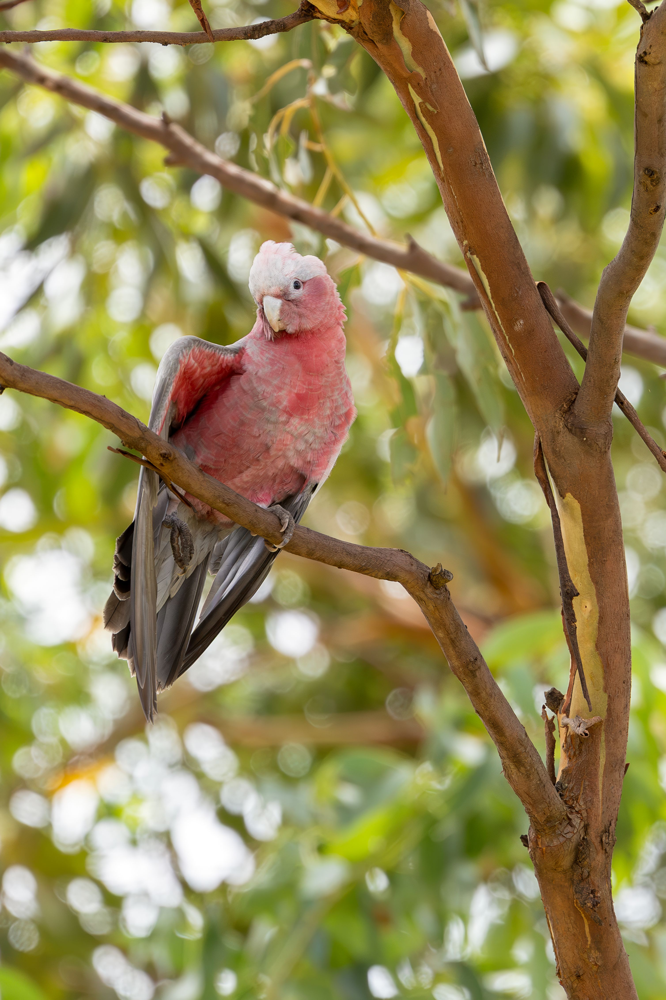

The Galah is a striking pink-and-grey cockatoo and one of Australia's most familiar parrots. Its head, neck and underparts are rose-pink, while its back, wings and undertail are grey. Galahs are highly social and are often seen in noisy flocks feeding on the ground or gathering in trees. They eat seeds, grains, roots and other plant material and have benefited in some regions from agricultural landscapes. Their strong social behaviour and adaptability have also allowed them to thrive around towns and cities. Galahs can sometimes form mixed groups with other cockatoos. Their bright plumage and energetic personalities make them particularly easy to recognise.